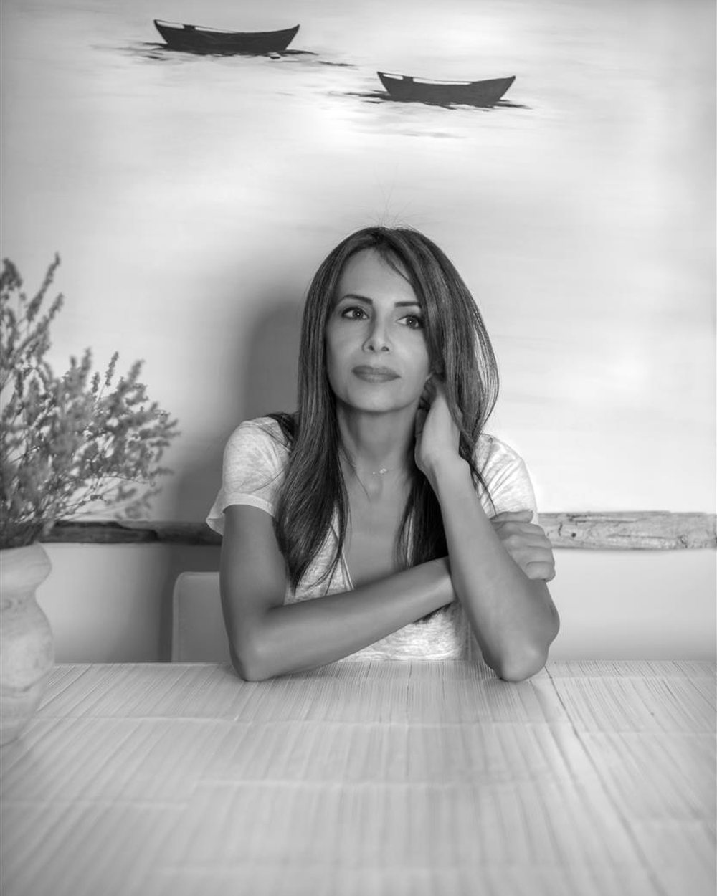
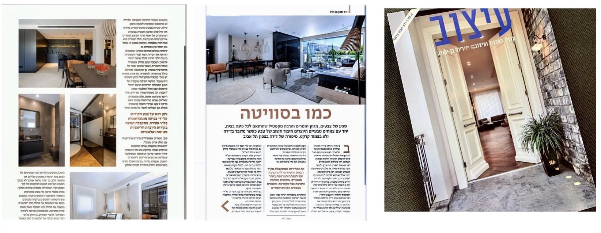

בית הוא השקט שלי,
בית הוא מקום שכיף לי לחזור אליו, להתרווח, לנשום להנות. בית הוא חדרים שמתמזגים בהרמוניה עם החלל, רהיטים שמתכתבים עם תמונות ואביזרים עם סיפורים.
התמחויות
איך אני יכולה לעזור?
עיצוב נקי ומדויק, בליווי אישי, מהרעיון ועד הפרט האחרון.


פרויקטים
עבודות נבחרות
עיצוב פנים והום סטיילינג מתחיל בראייה של מי מולי. כל פרויקט נעשה בליווי אישי וצמוד החל משלב התכנון, דרך בחירת החומרים ועד לפרטים הקטנים שלאחר הכניסה לבית. חלק ניכר משאיפתי הוא להתאים את אופי הלקוח לתוצר העיצוב הסופי, תוך כדי סינרגיה בין השניים ושמירת ערכי העיצוב המקצועיים.
אודות
היי, אשמח להכיר

מעצבת פנים והום סטיילינג. מסע ההשראה שלי החל בארצות הברית, שם התגוררתי במשך שני עשורים. החיים זימנו לי ביקורים תכופים באתרי נופש ובתי יוקרה ביעדים שונים סביב העולם, מסע שהתגבש לתשוקה גדולה לאסתטיקה בכלל ולעיצוב בפרט.
עיצוב הבית מבחינתי הוא כניסה לעולמו האישי של הלקוח הממוקד בצרכיו, רצונותיו, אורח החיים שלו והגשמת מאווייו.
אני מאמינה בעיצוב חלל נקי מאלמנטים מיותרים והפיכת הבית למקום שכיף לחיות בו, לא משנה גודלו. המטרה שלי היא ליצור איזון מושלם בין פונקציונאליות, ארגונומיה ואסתטיקה, הם אלה שמובילים אותי ליצירת פרויקטים מעניינים, מודרניים ומעוצבים עבור לקוחותיי. מבחינתי כל פרויקט הוא יצירת אמנות.
לפני ואחרי
אותו חלל, מבט אחר
הזזת ריהוט, השקעה קטנה בצבע, שטיח ותמונה, גורמים לשינוי גדול.

כתבה על פרויקט במגזין ״עיצוב״
הום סטיילינג עושה את כל ההבדל.
אפשר לבחור את החומרים הנכונים וריהוט יוקרתי ועדיין, להרגיש שמשהו חסר. הום סטיילינג הוא השלב שבו הבית מקבל חום ונשמה, עם טקסטיל, תאורה, צבע, אביזרים ואיך שכל אלה נפגשים יחד.
זה ההבדל בין חלל שנראה טוב בהדמיה לבין בית שנעים לחזור אליו בכל יום. סטיילינג מאחד את כל הפרטים לשפה אחת, מבליט את מה שכבר יש, ולא פעם חוסך שיפוץ שלם.